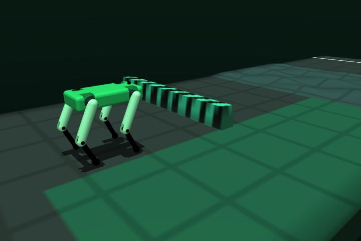
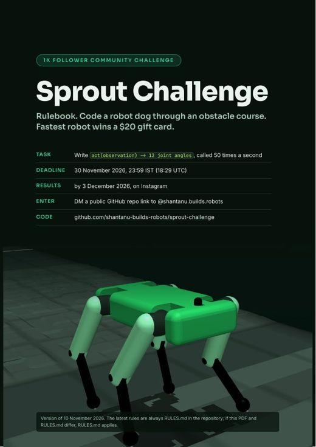
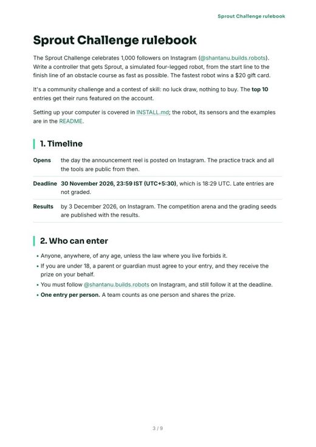
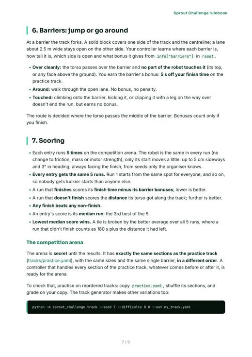
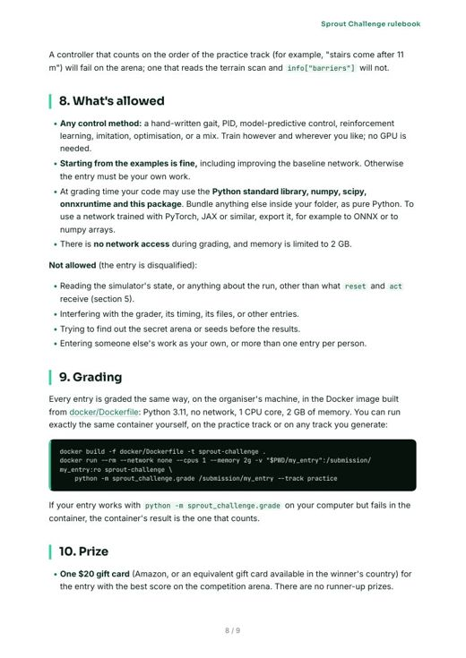

- 47.8 s
- 49.3 s
- 50.6 s
- 51.0 s
- 55.2 s
Ties with #2, and wins on the average: 50.8 s against 113.1 s.
Sprout Challenge · live
Write a controller that gets Sprout, a simulated 28 kg robot dog, down an obstacle course. Fastest robot wins a $20 gift card, and the top 10 runs get featured on Instagram.
Entries close 30 November, 23:59 IST
Watch first
The task, the course, how to enter, how you're scored and what you win. Everything in it is in the rulebook below.
The course
Rough ground, stairs, hurdles, a ramp, a narrow bridge, a wall and waves stand between the start and the finish line. Your controller doesn't get a map: it sees what's ahead through a terrain scan, as a real robot would.
The competition arena has exactly the practice track's sections, with the same sizes, in a different order. It stays secret until the results. Practice on shuffled copies of the practice track so your robot is ready for any order.
Your job
50 times a second your controller gets the robot's sensors and returns 12 joint angles. Use any method: a hand-written gait, PID, MPC, reinforcement learning, or something nobody has tried yet.
from sprout_challenge import Controller
class MyController(Controller):
def reset(self, info):
# once per run: limits, barriers
self.pose = info["default_pose"]
def act(self, obs):
# joints, IMU, feet, terrain scan
targets = self.pose.copy()
return targets # 12 joint angles [rad]Time to beat
Practice track, median of 5 runs. Improving the baseline network is allowed.

The fork
Clear it without touching it and take 5 s off your finish time.
A 2.5 m lane stays open on one side. No bonus, no penalty.
Touching it doesn't end the run, but earns no bonus. Bonuses count only if you finish.
Get started
Python 3.10 to 3.13 on Linux, macOS or Windows. New to this? The install guide goes step by step.
git clone https://github.com/shantanu-builds-robots/sprout-challenge && cd sprout-challengepip install -e ".[video]"python -m sprout_challenge.run examples/ppo_baseline --viewpython -m sprout_challenge.grade examples/ppo_baseline --track practiceSubmission guidelines
A folder with a controller.py that defines one Controller subclass, plus anything it loads (weights, lookup tables, helper modules). Load files relative to __file__. Under 200 MB.
Either as the repository itself, with controller.py at the top, or as the only folder in the repository with a controller.py. Commit real files: symbolic links, .pyc files and __pycache__ are ignored.
The judges run every entry in the challenge's Docker image: Python 3.11, no network, 1 CPU core, 2 GB of memory. At grading time you can use the standard library, numpy, scipy, onnxruntime and the challenge package. Export trained networks to ONNX or numpy arrays.
docker build -f docker/Dockerfile -t sprout-challenge .docker run --rm --network none --cpus 1 --memory 2g -v "$PWD/my_entry":/submission/my_entry:ro sprout-challenge python -m sprout_challenge.grade /submission/my_entry --track practiceYour name, your Instagram handle, a backup contact for the results (email or phone), and your repository link. Entering as a team? Add everyone. Sent it twice? Your latest response counts. You must follow @shantanu.builds.robots, and still follow it at the deadline.
Open the entry formEvery entry is cloned right after 23:59 IST on 30 November, and the version in the repository then is the one that counts. Commit dates are not used. Keep the repository public until the results are out.
Judging and ranking
Every entry is graded the same way, by a script, in the same container. Nobody picks a favorite.
Made-up entries, on a 56.8 m arena. The highlighted run is each entry's median.
Ties with #2, and wins on the average: 50.8 s against 113.1 s.
Two clean jumps took 5 s off, but two falls pull its average down.
Only 3 finishes, but that's enough for a time as its median.
The two fastest runs of anyone, but it finished only twice, so its median is a distance and it ranks below every entry whose median is a finish.
With the results, the secret arena, the grading seeds and the full leaderboard are published, so you can re-run any entry, yours included, and get the same score. If a bug in the competition code turns out to change results, it gets fixed and every entry is re-graded. Breaking the rules in section 8 disqualifies an entry. The organizer's decision is final.
Prize and payout
How the payout works
Rulebook PDF
Read it here, or save it for later. If the PDF and the rules below ever differ, the latest version in the repository applies.




Questions
No. It runs on a normal laptop. Train with anything you like; at grading time your controller gets one CPU core.
Anyone, anywhere, of any age, unless the law where you live forbids it. If you're under 18, a parent or guardian must agree, and they receive the prize for you. One entry per person.
Yes. A team counts as one entry and shares the prize.
Yes. Starting from any of the examples is fine, including improving the baseline network. Otherwise the entry must be your own work.
No. It gets joint readings, an IMU, foot contacts, its position and heading, and a 13 × 7 height map of the terrain around it, like a processed lidar scan.
One $20 gift card (Amazon, or an equivalent available in your country) for the best score. The top 10 get a video of their run featured on @shantanu.builds.robots, credited to their handle.
Ask by DM before the deadline. Answers that change how a rule is read are added to the rulebook for everyone.
The rulebook
The same rules as the PDF. Tap a rule to open it. If this page and the rulebook ever differ, the rulebook applies.
The Sprout Challenge celebrates 1,000 followers on Instagram (@shantanu.builds.robots). Write a controller that gets Sprout, a simulated four-legged robot, from the start line to the finish line of an obstacle course as fast as possible. The fastest robot wins a $20 gift card.
It's a community challenge and a contest of skill: no luck draw, nothing to buy. The top 10 entries get their runs featured on the account.
Contents: 1. Timeline · 2. Who can enter · 3. What you submit · 4. How to enter · 5. A run · 6. Barriers · 7. Scoring · 8. What's allowed · 9. Grading · 10. Prize · 11. Judging and disputes · 12. Instagram
Setting up your computer is covered in INSTALL.md; the robot, its sensors and the examples are in the README.
| Opens | 11 November 2026. The practice track, all the tools and the entry form are public from then. |
| Deadline | 30 November 2026, 23:59 IST (UTC+5:30), which is 18:29 UTC. Late entries are not graded. |
| Results | by 3 December 2026, on Instagram. The competition arena and the grading seeds are published with the results. |
A submission folder containing a file named controller.py and anything it loads (network weights, lookup
tables, helper modules). controller.py defines one subclass of sprout_challenge.Controller:
from sprout_challenge import Controller
class MyController(Controller):
def reset(self, info): # once, before each run: the track's layout and the robot's limits
self.pose = info["default_pose"]
def act(self, obs): # 50 times a second: sensors in, 12 joint angles [rad] out
return self.pose.copy()
__file__, not the current directory.controller.py at
the top), or as the only folder in the repository that contains a controller.py..pyc files and __pycache__ folders are ignored when your entry is collected. Commit the real
files.The examples/ folder has three valid entries, from one that stands still to a neural network that
finishes the practice track.
You may keep pushing changes until the deadline. The version that counts is the one in the repository when it is collected at the deadline: every entry is cloned right after 23:59 IST on 30 November, and the exact commit taken is recorded. Commit dates are not used. Keep the repository public until the results are out.
act receives the robot's sensors and returns 12 joint target angles. The robot's
position servos (stiffness 200 N·m/rad, torque limit 150 N·m) track them. Targets outside the joint limits are
clipped; a non-finite value keeps that joint's previous target.reset or act raises an error, returns something other than
12 numbers, or takes longer than 5 s to answer, the controller is stopped and the robot holds its last targets
until the run ends. reset itself may take up to 60 s.act call has 20 ms of wall-clock time on one CPU core of the grading machine. A late
answer is thrown away and the robot keeps its previous targets for that step, as a real robot would. The grader
counts late steps; keep well under the budget.The obstacles are built from these section types: flat, rough ground, stairs, hurdles, a ramp, a narrow bridge, waves, a trench, and barriers. Their parameters are in track.py.
Your controller sees only what reset and act give it; everything else about the simulation is off limits
(section 8). All readings are exact (no sensor noise).
Every step, in act(obs):
| Reading | Size | What it is |
|---|---|---|
time |
1 | seconds since the start |
joint_pos, joint_vel |
12 + 12 | joint angles [rad] and speeds [rad/s], legs in the order back-right, back-left, front-left, front-right |
gyro |
3 | body turn rate [rad/s] (IMU) |
accelerometer |
3 | body acceleration [m/s²], gravity included (IMU) |
gravity |
3 | which way is down, in the body frame: (0, 0, -1) when level |
base_lin_vel |
3 | body velocity [m/s], body frame, as a state estimator would give it |
position |
3 | torso centre [m]: x along the track, y across it, z up, as motion capture would give it |
yaw |
1 | heading [rad]; 0 faces the finish |
foot_contact |
4 | which feet are touching the ground |
height_scan |
13 × 7 | the terrain sensor (below) |
last_action |
12 | the joint targets applied last step |
The terrain sensor (height_scan) is how the robot sees the course. It is a grid of 13 × 7 terrain heights
around the robot, from 0.8 m behind to 1.6 m ahead and 0.6 m to each side, turned with the robot's heading; each
value is the terrain height there minus the torso's height (about −0.86 m on flat ground, less negative over a step
or a hurdle ahead). Think of it as the height map a lidar or depth camera would build, already processed. There is
no camera image and no raw lidar point cloud. The grid points' positions are in info["scan_points"].
Once per run, in reset(info): the control period dt (0.02 s), the standing pose default_pose, the joint
limits joint_lower and joint_upper, scan_points, the finish line's position finish_x, the track width
track_width, and barriers: for each barrier, where it is along and across the track, its height, its bonus and
the centre of the open lane around it.
The track's layout is not given: not the sections, their order or their sizes. Your controller finds out what's ahead from the terrain sensor.
At a barrier the track forks. A solid block covers one side of the track and the centreline; a lane about 2.5 m
wide stays open on the other side. Your controller learns where each barrier is, how tall it is, which side is open
and what bonus it gives from info["barriers"] in reset.
The route is decided where the torso passes the middle of the barrier. Bonuses count only if you finish.
The arena is secret until the results. It has exactly the same sections as the practice track (tracks/practice.yaml), with the same sizes and the same single barrier, in a different order. A controller that handles every section of the practice track, whatever comes before or after it, is ready for the arena.
To check that, practise on reordered tracks: copy practice.yaml, shuffle its sections, and grade on your copy. The
track generator makes other variations too:
python -m sprout_challenge.track --seed 7 --difficulty 0.8 --out my_track.yaml
A controller that counts on the order of the practice track (for example, "stairs come after 11 m") will fail on
the arena; one that reads the terrain scan and info["barriers"] will not.
Not allowed (the entry is disqualified):
reset and act receive (section 5).Every entry is graded the same way, on the organiser's machine, in the Docker image built from docker/Dockerfile: Python 3.11, no network, 1 CPU core, 2 GB of memory. You can run exactly the same container yourself, on the practice track or on any track you generate:
docker build -f docker/Dockerfile -t sprout-challenge .
docker run --rm --network none --cpus 1 --memory 2g -v "$PWD/my_entry":/submission/my_entry:ro sprout-challenge \
python -m sprout_challenge.grade /submission/my_entry --track practice
If your entry works with python -m sprout_challenge.grade on your computer but fails in the container, the
container's result is the one that counts.
scripts/grade_all.sh on the arena and the secret seeds, and publishes the
leaderboard, the arena and the seeds with the results, so anyone can re-run any entry and check its score.This competition is not sponsored, endorsed or administered by, or associated with, Instagram or Meta. By entering, you release Instagram and Meta from any responsibility for it. Questions go to @shantanu.builds.robots, not to Instagram.
Send this to the friend you'd race.